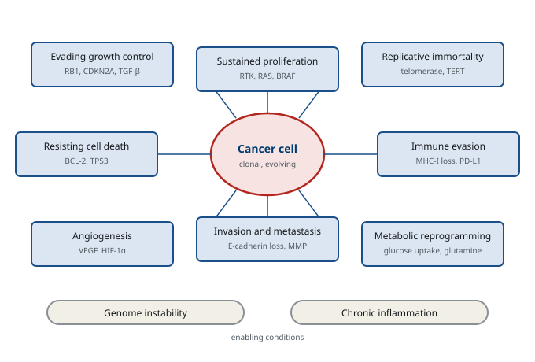

M01-W12-L03 · 인체일반생물학과 기초세포생물학
암의 세포생물학
The Cell Biology of Cancer
학습목표
- 종양의 양성과 악성을 구분하는 기준을 들고 침습과 전이가 왜 결정적인지 설명한다.
- 암을 "세포 수준의 질환"으로 보는 근거를 단일 클론성과 체세포 변이의 축적으로 설명한다.
- Oncogene과 종양 억제 유전자를 정의하고 각각이 활성화·불활성화되는 방식을 분류한다.
- 두 번 타격 가설의 내용과 유전성 암 증후군에서의 적용을 설명한다.
- 구동 변이와 동반 변이를 구분하고 그 구분이 치료 선택에 쓰이는 방식을 쓴다.
- 암세포가 획득하는 능력을 여섯에서 여덟 가지로 정리하고 각 능력의 분자적 기반을 연결한다.
- 다단계 발암의 근거를 대장암의 모형으로 설명하고 시간 규모를 쓴다.
- 발암 요인을 세 부류로 나누고 각 부류가 유전체에 남기는 흔적을 설명한다.
- 전이의 단계를 쓰고 각 단계가 왜 비효율적인지 설명한다.
- 표적 치료와 면역치료의 원리를 쓰고 내성이 생기는 기전을 분류한다.
선수지식
- M01-W12-L01 세포주기와 그 조절 — cyclin D-RB-E2F 축, 검문지점, p53
- M01-W12-L02 세포 재생과 세포 사멸 — 세포사멸의 두 경로, BCL-2 가족, 줄기세포와 niche
- M01-W11-L03 신호 경로의 통합과 발생·질환에서의 역할 — 경로의 구동 변이, 생식계열과 체세포의 구별
- M01-W06-L03 DNA 복제·복구와 유전체 재배열 — 복구 결손, mutational signature, 합성 치사
1. 종양을 정의하는 기준
신생물(neoplasm)은 세포가 조절을 벗어나 자율적으로 증식해 생긴 덩어리다. 양성과 악성을 가르는 기준은 성장 속도가 아니라 두 가지 성질이다.
| 항목 | 양성 종양 | 악성 종양 |
|---|---|---|
| 경계 | 섬유 껍질로 싸여 분명하다 | 주변으로 침습해 불분명하다 |
| 성장 | 느리고 밀어내며 자란다 | 빠르고 파괴하며 자란다 |
| 세포 모양 | 원래 조직과 비슷하다 | 이형성이 크고 핵이 크고 분열이 많다 |
| 침습 | 없다 | 있다 |
| 전이 | 없다 | 있다 |
마지막 두 줄이 결정적이다. 침습과 전이가 악성을 정의한다. 이유는 임상적이다. 침습하지 않는 종양은 잘라 내면 끝나지만, 침습한 종양은 경계를 알 수 없고 전이한 종양은 국소 치료로 제거할 수 없다. 암으로 사망하는 원인의 대부분이 원발 종양 자체가 아니라 전이라는 사실이 이 정의의 근거다.
명명법도 정리해 둔다. 양성 종양은 유래 조직에 -oma를 붙인다(adenoma, lipoma, leiomyoma). 악성 종양은 상피 유래이면 carcinoma, 중간엽 유래이면 sarcoma다. 혈액과 림프계는 별도로 leukemia와 lymphoma라 부르고, 이름에 -oma가 붙지만 악성인 예외가 몇 개 있다(melanoma, lymphoma, seminoma, glioma). 이름이 성질을 알려 주지 않는 예외가 있다는 점을 기억해야 한다.
침습 직전의 단계도 이름이 있다. 상피 안에서 세포가 악성의 형태를 보이지만 기저막을 넘지 않은 상태를 제자리암(carcinoma in situ)이라 한다. 기저막을 넘는 순간부터 침습암이 되고, 그때부터 혈관과 림프관에 접근할 수 있으므로 전이가 가능해진다. 기저막이 경계선이며, 선별 검사가 이 단계를 찾으려 하는 이유가 여기에 있다. 기저막을 넘지 않은 상태가 왜 그렇게 다른지는 구조로 설명된다. 상피는 혈관을 가지지 않으므로, 기저막 안에 머무는 세포는 혈관과 림프관에 닿을 수 없고 따라서 몸의 다른 곳으로 갈 통로가 없다. 영양도 아래의 결합조직에서 확산으로 받으므로 덩어리의 크기 자체가 제한된다. 기저막을 넘는 순간 이 두 제약이 모두 풀린다. 그래서 제자리암의 치료는 병변을 국소적으로 완전히 제거하는 것으로 끝나고, 전신 치료를 더하지 않는다. 반대로 침습이 확인되면 그 시점부터 전신 치료의 필요를 따져야 하고, 림프절과 먼 장기를 함께 평가하는 검사가 들어간다.
2. 암은 세포 수준의 질환이다
암의 성질을 이해하는 출발점은 하나의 세포에서 시작한다는 사실이다. 근거가 세 가지다.
- 단일 클론성: 한 종양의 세포들이 같은 체세포 변이, 같은 X 염색체 불활성화 양상, 같은 면역글로불린이나 T세포 수용체 재배열을 가진다. 즉 하나의 세포에서 유래했다.
- 체세포 변이의 축적: 종양의 유전체를 읽으면 정상 조직에 없는 변이가 수십에서 수만 개 발견된다.
- 클론의 진화: 종양 안에 서로 조금씩 다른 변이를 가진 세포 집단이 공존하고, 치료 압력에서 특정 집단이 선택되어 남는다.
세 번째가 암을 이해하는 틀을 정한다. 암은 몸 안에서 일어나는 체세포 진화다. 변이가 다양성을 만들고, 증식의 이점이 선택을 만들고, 그 결과가 자손 세포에 전달된다. 진화의 세 조건이 모두 갖추어져 있다. 그래서 암의 성질 가운데 많은 것이 진화의 언어로 설명된다. 치료가 선택 압력으로 작동해 저항하는 클론을 남기는 것, 전이 병소가 원발 종양과 유전적으로 다른 것, 그리고 종양이 시간이 갈수록 이질적으로 변하는 것이 그 예다.
여기서 중요한 수치를 짚어 둔다. 하나의 세포에 생긴 변이가 임상적으로 발견되는 덩어리가 되기까지 수년에서 수십 년이 걸린다. 변이가 하나로는 부족하고 여러 개가 순차적으로 쌓여야 하며, 그 가운데 상당수는 세포가 분열할 때의 복제 오류에서 온다. 그래서 나이가 암의 가장 강한 위험 요인이다. 발생률이 나이의 네제곱에서 여섯제곱에 비례해 올라간다는 관찰이 다단계 모형의 초기 근거가 되었다.
3. Oncogene과 종양 억제 유전자
암과 관련된 유전자는 작용 방향으로 두 부류로 나뉜다. 이 구분이 이 수업의 축이다.
| 항목 | Oncogene | 종양 억제 유전자 |
|---|---|---|
| 정상 기능 | 증식과 생존을 촉진한다 | 증식을 억제하거나 손상에 반응한다 |
| 암에서의 변화 | 기능 획득(활성화) | 기능 상실(불활성화) |
| 필요한 대립형질 | 한쪽만으로 충분하다(우성) | 대개 양쪽이 망가져야 한다(열성) |
| 변이의 성질 | 특정 위치에 반복되는 변이 | 어디든 기능을 망가뜨리는 변이 |
| 예 | RAS, MYC, ERBB2, BRAF, ABL | TP53, RB1, APC, BRCA1/2, PTEN |
Oncogene이 활성화되는 방식은 네 가지다.
- 점 변이: 특정 위치의 치환이 단백질을 켜진 상태로 고정한다. *RAS*의 G12와 Q61, *BRAF*의 V600E가 그 예다. 같은 자리에 반복해 나타난다는 것이 구동 변이의 표지다.
- 증폭: 유전자의 복제수가 늘어 산물이 과다해진다. 유방암의 ERBB2, neuroblastoma의 *MYCN*이 그 예다.
- 전좌: 유전자가 다른 자리로 옮겨 가 강한 promoter 아래 놓이거나 융합 단백질을 만든다. Burkitt 림프종의 t(8;14)에서 *MYC*가 면역글로불린 enhancer 아래로 가고, 만성 골수성 백혈병의 t(9;22)에서 BCR-ABL1 융합 kinase가 만들어진다.
- 삽입과 바이러스: retrovirus가 proto-oncogene 근처에 삽입되어 발현을 올리거나 바이러스 자체가 oncogene을 가져온다.
종양 억제 유전자가 불활성화되는 방식도 네 가지이고, 그 가운데 하나가 서열의 변화가 아니다.
- 점 변이와 작은 삽입·결실: 기능을 망가뜨린다.
- 큰 결실: 유전자 전체가 사라진다.
- promoter 과메틸화: 서열은 정상인데 전사가 꺼진다(M01-W07-L02).
- 이형접합성의 소실(LOH): 한쪽이 이미 망가진 상태에서 나머지 정상 대립형질이 포함된 염색체 구간을 잃는다.
세 번째가 임상 검사에서 중요하다. "서열이 정상인데 단백질이 없다"는 결과를 받았을 때 메틸화를 떠올려야 한다. M01-W06-L03에서 본 MLH1 사례가 그것이다.
두 부류의 비대칭이 치료에 그대로 반영된다는 점을 여기서 미리 짚어 둔다. 기능 획득은 막을 수 있고 기능 상실은 되돌리기 어렵다. Oncogene의 산물은 활성이 과도한 단백질이므로, 그 활성을 막는 분자를 만들면 치료가 된다. 그래서 지금 임상에서 쓰이는 표적 치료의 대부분이 oncogene을 겨냥한다. 반대로 종양 억제 유전자는 이미 없어진 기능이므로 막을 대상이 없다. 없는 단백질을 약으로 되살리는 일은 훨씬 어렵고, 유전자를 넣어 주는 접근도 종양의 모든 세포에 전달하는 문제에 막힌다. 그래서 종양 억제 유전자의 결손은 다른 방향으로 공략한다. 결손 때문에 생긴 새로운 의존성을 찾아 그것을 막는 것이며, M01-W06-L03에서 본 BRCA 결손과 PARP 억제제의 합성 치사가 대표적 예다. *RB1*이 없는 종양이 CDK4/6 억제제에 듣지 않는 것도 같은 논리의 반대편이다. 억제해야 할 하류가 이미 사라졌으므로 상류를 막아도 효과가 없다. 이 대비를 기억하면 "이 종양에 어떤 약이 들을 수 있는가"를 묻는 문제에서 유전자의 부류만으로 상당 부분을 추론할 수 있다.
용어 하나를 정확히 해 둔다. Proto-oncogene은 정상 세포가 가진 유전자이고, 그것이 활성화되어 암을 일으키는 형태가 된 것을 oncogene이라 부른다. 즉 암을 만드는 유전자가 외부에서 들어온 것이 아니라, 증식과 생존을 조절하는 정상 유전자가 조절을 벗어난 것이다. 이 사실의 함의가 두 가지다. 첫째, oncogene의 정상 기능을 알면 암에서의 작용을 예측할 수 있다. *RAS*가 성장인자 신호를 전달하는 스위치라는 것을 알면, 켜진 상태로 고정된 RAS가 성장인자 없이도 증식 신호를 보낸다는 결론이 바로 나온다. 둘째, 표적 치료의 부작용이 그 정상 기능에서 나온다. EGFR을 막으면 EGFR에 의존하는 피부와 장 상피에서 부작용이 생기고, VEGF를 막으면 혈관의 유지에 관여하는 정상 기능이 함께 억제되어 고혈압과 상처 치유 지연이 나타난다. 표적 치료가 선택적이라는 말은 종양이 그 경로에 더 의존한다는 뜻이고, 정상 조직이 그 경로를 전혀 쓰지 않는다는 뜻이 아니다.
4. 두 번 타격 가설
종양 억제 유전자에 대개 두 번의 타격이 필요하다는 것이 Knudson이 retinoblastoma의 발생 양상에서 끌어낸 추론이다. 논리는 통계적이었다.
관찰은 두 가지였다. 유전성 retinoblastoma는 이르게, 양쪽 눈에, 여러 개로 생기고, 산발성은 늦게, 한쪽 눈에, 하나로 생긴다. Knudson은 이것을 두 번의 변이로 설명했다. 유전성에서는 첫 번째 타격이 생식계열에 이미 있어 모든 망막 세포가 한 발 앞서 있으므로, 어느 세포에서든 한 번의 추가 변이로 종양이 시작된다. 산발성에서는 같은 세포에서 두 번의 변이가 모두 일어나야 하므로 확률이 훨씬 낮고 그만큼 늦게, 드물게 생긴다.
이 추론이 뒤에 RB1 유전자의 발견으로 확인되었고, 유전성 암 증후군의 일반적 틀이 되었다.
| 증후군 | 유전자 | 주된 종양 |
|---|---|---|
| 가족성 retinoblastoma | RB1 | 망막, 뒤에 골육종 |
| Li–Fraumeni | TP53 | 유방, 뇌, 연부조직, 부신 |
| 가족성 대장폴립증 | APC | 대장 |
| Lynch 증후군 | MLH1, MSH2 등 | 대장, 자궁내막 |
| 가족성 유방·난소암 | BRCA1, BRCA2 | 유방, 난소, 전립선, 췌장 |
| 다발성 내분비 신생물 1형 | MEN1 | 부갑상샘, 췌도, 뇌하수체 |
| von Hippel–Lindau | VHL | 신세포암, 혈관종 |
이 표에서 읽어야 할 일반 원칙이 네 가지다. 첫째, 유전성 암 증후군은 암 자체를 물려받는 것이 아니라 첫 번째 타격을 물려받는 것이다. 그래서 환자는 암을 가지고 태어나지 않고, 평생에 걸쳐 암이 생길 위험이 높아진 상태로 태어난다. 둘째, 발병이 이르고 여러 곳에 생기고 양쪽 장기에 생긴다. 이 세 가지가 임상에서 유전성을 의심하는 신호이며, 가족력이 없어도(새로 생긴 생식계열 변이, 또는 침투도가 낮은 경우) 성립할 수 있으므로 가족력의 부재가 배제의 근거가 되지 않는다. 셋째, 증후군마다 종양의 조합이 정해져 있다. 같은 유전자의 결손이 모든 조직에서 종양을 만들지 않고 특정 조직에서만 두드러진다. 이유는 그 조직이 해당 유전자의 기능에 더 의존하거나, 그 조직의 교체 속도가 빨라 두 번째 타격의 기회가 많기 때문이라고 설명한다. 넷째, 유전형을 알면 관리가 바뀐다. 선별 검사를 더 이르게 더 자주 하고, 예방적 수술을 고려하고(가족성 대장폴립증의 대장 절제, BRCA 변이의 난관난소 절제), 결손의 성질에 맞는 치료를 고른다(BRCA 변이 종양에 대한 PARP 억제제). 가족 구성원의 검사도 여기에 포함되며, 그 과정에서 검사를 원하지 않을 권리와 미성년자 검사의 시점이 윤리적 쟁점으로 다루어진다.
5. 구동 변이와 동반 변이
종양 하나의 유전체를 읽으면 변이가 수백에서 수만 개 나온다. 그 가운데 종양의 성질에 실제로 기여하는 것은 소수다.
- 구동 변이(driver mutation): 세포에 증식과 생존의 이점을 주어 선택된 변이. 보통 종양 하나에 2~8개로 추정된다.
- 동반 변이(passenger mutation): 이점을 주지 않으면서 함께 전달된 변이. 수가 훨씬 많다.
구분하는 근거는 세 가지다. 같은 자리에 반복해 나타나는지(여러 환자에서 같은 codon이 바뀌면 우연이 아니다), 그 변이가 단백질의 기능을 어떻게 바꾸는지, 그리고 기능 실험에서 증식의 이점을 주는지다. M01-W06-L01에서 본 pooled CRISPR screen과 DepMap 같은 의존성 자료가 세 번째를 체계적으로 제공한다.
이 구분이 치료에서 결정적이다. 표적 치료는 구동 변이를 겨냥할 때만 작동한다. 동반 변이를 표적으로 삼으면 종양이 그 유전자에 의존하지 않으므로 효과가 없다. 그래서 종양 유전체 검사의 보고서는 변이의 목록이 아니라 작용 가능한(actionable) 변이를 가려 제시한다.
구동 변이를 경로 단위로 묶으면 그림이 단순해진다. 서로 다른 환자의 종양에서 변이된 유전자 목록은 크게 다르지만, 그 변이들을 경로로 묶으면 소수의 경로로 수렴한다. 세포주기 조절(RB 축), 손상 반응(p53 축), 성장인자 신호(RTK-RAS-PI3K), 염색질 조절, 그리고 telomere 유지다. 치료 표적을 유전자가 아니라 경로 단위로 고르는 전략의 근거가 이 수렴이다.
구동 변이의 수가 적다는 사실에서 치료의 전략이 하나 더 나온다. 같은 경로에 모이는 변이는 같은 약으로 다룰 수 있다. 그래서 임상 시험의 설계가 장기 중심에서 변이 중심으로 옮겨 가는 흐름이 생겼다. 조직의 종류와 무관하게 특정 변이를 가진 환자를 모아 한 약을 시험하는 방식이며, NTRK 융합과 MSI-high 종양에서 이 방식으로 승인된 약이 나왔다. 다만 같은 변이가 조직에 따라 다른 반응을 보이는 예도 분명하다. BRAF V600E는 흑색종에서 BRAF 억제제에 잘 반응하지만 대장암에서는 반응이 약하고, 그 차이가 EGFR을 통한 되먹임으로 경로가 다시 켜지기 때문이라는 설명이 제시되어 병합 치료의 근거가 되었다. 변이가 같아도 그 변이가 놓인 신호망의 맥락이 다르면 결과가 달라진다는 점이 M01-W11-L03에서 본 신호 통합의 원리가 치료에서 되풀이되는 자리다.
6. 암세포가 획득하는 능력
암세포가 정상 세포와 다른 점을 능력의 목록으로 정리한 것이 Hanahan과 Weinberg의 서술이다. 이 목록의 가치는 각 능력이 어느 분자 기전에 대응하는지가 분명하다는 데 있다.
| 능력 | 분자적 기반 | 이 모듈에서 다룬 곳 |
|---|---|---|
| 지속적인 증식 신호 | RTK 증폭, RAS·BRAF 활성화, 자가분비 | M01-W11-L02 |
| 성장 억제의 회피 | RB1 결손, CDKN2A 결손, TGF-β 하류 소실 | M01-W12-L01 |
| 세포사멸의 회피 | BCL-2 과발현, TP53 결손 | M01-W12-L02 |
| 무한한 복제 능력 | telomerase 재활성화, TERT promoter 변이 | M01-W06-L03 |
| 혈관 신생의 유도 | VEGF 분비, 저산소에서 HIF-1α 축적 | 아래 |
| 침습과 전이 | E-cadherin 소실, MMP, 상피-중간엽 전환 | M01-W11-L01 |
| 대사의 재편 | 포도당 섭취 증가, glutamine 의존, 생합성 중심 | M01-W09-L03 |
| 면역 회피 | 항원 제시의 감소, 면역관문 리간드의 발현 | 아래 |
여기에 바탕이 되는 두 가지를 더한다. 유전체 불안정성은 변이가 쌓이는 속도를 올려 다른 능력의 획득을 가속하고, 염증은 성장인자와 활성산소를 공급해 같은 방향으로 작용한다.
두 항목을 조금 더 본다.
혈관 신생. 종양이 지름 1~2 mm를 넘으면 확산만으로는 산소와 영양이 중심까지 닿지 않는다. 그래서 종양은 혈관을 끌어와야 하고, 저산소가 그 신호를 만든다. 산소가 부족하면 M01-W08-L01에서 본 대로 HIF-1α가 hydroxylation되지 않아 분해되지 않고 쌓이며, VEGF를 비롯한 혈관 신생 인자의 전사를 켠다. 만들어진 혈관은 정상 혈관과 다르다. 구조가 불규칙하고 새며 혈류가 고르지 않다. 이 비정상성이 두 가지 결과를 낳는다. 약물의 전달이 고르지 않고, 종양 안에 저산소 구역이 남아 방사선 저항과 선택 압력의 원천이 된다.
면역 회피. 종양세포는 변이에서 생긴 신생항원을 가지므로 면역계의 표적이 될 수 있다. 실제로 면역이 종양을 제거하는 과정이 일어나며, 그 과정에서 면역을 피하는 클론이 선택되는 것을 면역 편집이라 한다. 회피의 방식은 세 가지다. 항원을 숨기기(MHC class I의 발현 감소, 항원 제시 기구의 변이), 억제 신호를 켜기(PD-L1의 발현), 그리고 억제성 환경 만들기(TGF-β와 억제성 면역세포의 동원). 두 번째가 면역관문 억제제의 표적이다.
대사의 재편. 위 표의 한 줄이지만 별도로 보아야 한다. 암세포는 산소가 있어도 포도당을 젖산까지 보내는 비중이 높다. 이를 Warburg 효과라 하며, 겉으로는 손해처럼 보인다. 포도당 한 분자에서 얻는 ATP가 산화적 인산화의 경우보다 훨씬 적기 때문이다. 설명의 방향은 ATP가 아니라 재료다. M01-W09-L03에서 본 대로 glycolysis의 중간체가 핵산, 아미노산, 지질의 합성으로 갈라져 나가므로, 빠르게 분열하려면 탄소 골격이 많이 필요하고 그 공급을 늘리는 쪽이 유리하다. Glutamine에 대한 의존이 커지는 것도 같은 이유다. Glutamine이 TCA 회로에 탄소를 보충해 생합성으로 빠져나간 중간체를 메운다. 임상적 접점이 둘 있다. 첫째, FDG-PET이 이 성질을 영상으로 쓴다. 포도당 유사체에 방사성 표지를 달아 주사하면 섭취가 많은 조직에 모이므로 종양과 전이 병소가 드러나며, 뇌와 심장처럼 포도당을 많이 쓰는 정상 조직이 배경으로 보인다는 한계도 함께 안다. 둘째, 대사 효소의 변이가 구동 변이인 종양이 있다. *IDH1*과 *IDH2*의 변이는 신경교종과 일부 백혈병에서 발견되고, 변이 효소가 만드는 대사물이 후성유전 조절 효소를 방해해 분화를 막는다. 이 기전은 M01-W07-L02에서 본 메틸화 조절과 직접 이어지며, 변이 IDH를 막는 약이 임상에 들어왔다. 대사가 신호와 후성유전으로 이어지는 통로라는 점이 이 절에서 가장 중요한 결론이다.

7. 다단계 발암
암이 여러 단계를 거쳐 생긴다는 것은 대장암에서 가장 자세히 정리되었다. 정상 상피에서 암까지의 과정이 조직 소견과 유전적 변화로 함께 추적되었기 때문이다.
순서는 대략 다음과 같다. 정상 상피에서 APC의 기능 상실로 Wnt 경로가 켜져 세포가 분화하지 않고 쌓여 폴립이 생긴다. 거기에 KRAS의 활성화가 더해져 폴립이 커지고, TGF-β 경로의 소실과 TP53의 결손이 더해지면서 침습암이 된다. 각 단계가 조직 소견의 단계(정상 → 과형성 → 저등급 샘종 → 고등급 샘종 → 침습암)와 대응한다.
이 모형에서 읽어야 할 점이 네 가지다.
- 순서가 완전히 고정된 것은 아니다. 같은 변이들이 다른 순서로 쌓인 종양도 있고, 전혀 다른 경로(MSI 경로, serrated 경로)로 발생하는 대장암도 있다.
- 시간이 길다. 첫 변이에서 침습암까지 수십 년이 걸린다는 추정이 있고, 이것이 선별 검사가 가능한 근거다. 폴립을 제거하면 그 선을 끊을 수 있다.
- 각 단계가 선택의 결과다. 변이가 생겨도 이점을 주지 않으면 그 클론이 퍼지지 않는다. 그래서 변이의 순서는 어느 변이가 그 시점에 이점을 주는지에 달려 있다.
- 정상 조직에도 변이가 있다. 나이가 든 사람의 정상 피부와 식도, 혈액에서 oncogene의 변이를 가진 클론이 흔히 발견된다. 변이 하나가 곧 암을 뜻하지 않는다는 것이 이 관찰의 교훈이며, 혈액에서 발견되는 이런 클론(clonal hematopoiesis)이 혈액암과 심혈관 질환의 위험과 연관된다는 자료가 쌓였다.
단계의 수가 조직마다 다르다는 점도 알아 두어야 한다. 종양 유전체를 대규모로 읽어 추정한 결과, 대부분의 고형암에서 구동 변이의 수는 두 개에서 여덟 개 사이이고, 소아 종양과 일부 혈액암에서는 한두 개로 적다. 소아 종양에서 적은 이유는 분명하다. 노출에 의한 변이가 쌓일 시간이 없었으므로, 발생 과정의 조절을 한 번에 크게 바꾸는 변화(융합 유전자, 발생 전사인자의 변이)가 주된 원인이 된다. 반대로 노출과 관련된 성인의 종양에서는 변이의 총수가 많고(흑색종과 흡연 관련 폐암에서 가장 많다) 그 가운데 구동 변이를 가려내는 일이 어려워진다. 이 차이가 치료의 성격도 가른다. 구동 변이가 적은 종양은 하나의 표적을 막는 치료가 잘 듣고, 변이가 많은 종양은 신생항원이 많아 면역치료가 잘 듣는 경향이 있다. 같은 자료에서 또 하나의 원칙이 나온다. 조직마다 자주 나오는 구동 유전자의 목록이 다르다는 것이다. *TP53*은 거의 모든 조직에서 흔하지만, *APC*는 대장에서, *VHL*은 신장에서, *IDH1*은 신경교종에서 두드러진다. 같은 유전자의 결손이 조직에 따라 다른 결과를 내는 이유는 그 조직의 발생 경로와 교체 속도, 그리고 그 조직이 어느 신호에 의존하는지가 다르기 때문이라고 설명한다.
8. 발암 요인
발암 요인은 세 부류로 나뉘고, 각 부류가 유전체에 남기는 흔적이 다르다.
화학적 요인. 대부분은 그 자체로 반응성이 없고 체내에서 대사되어 활성화된다. 그래서 전구발암물질과 활성 대사물을 구별한다. 담배 연기의 benzo[a]pyrene은 cytochrome P450에 의해 산화되어 DNA에 결합하는 형태가 되고, aflatoxin B1은 같은 방식으로 활성화되어 *TP53*의 특정 codon에 변이를 만든다. 간암에서 그 codon의 변이가 aflatoxin 노출의 표지로 쓰인다. 발암 과정을 개시(변이의 생성)와 촉진(변이를 가진 클론의 증식)으로 나누는 고전적 구분도 이 부류에서 나왔다. 개시는 비가역적이고 촉진은 자극이 계속되어야 유지된다.
물리적 요인. 이온화 방사선은 이중사슬 절단과 염색체 재배열을 만들고, 자외선은 pyrimidine dimer를 만들어 C에서 T로 가는 변이를 남긴다. M01-W06-L03에서 본 대로 각 요인이 고유한 mutational signature를 남기므로, 종양의 유전체에서 그 양상을 읽어 노출을 역추적할 수 있다.
생물학적 요인. 바이러스와 세균이 여러 기전으로 발암에 관여한다.
| 병원체 | 관련 종양 | 기전 |
|---|---|---|
| HPV 고위험군 | 자궁목암, 일부 두경부암 | E6가 p53을, E7이 RB를 불활성화한다 |
| HBV, HCV | 간세포암 | 만성 염증과 재생, HBV는 삽입도 한다 |
| EBV | Burkitt 림프종, 비인두암 | 세포 증식 신호의 모방, 전좌의 배경 |
| HTLV-1 | 성인 T세포 백혈병 | Tax 단백질의 전사 조절 교란 |
| Helicobacter pylori | 위암, 위 MALT 림프종 | 만성 염증과 세포 교체의 증가 |
여기서 두 기전을 구별해야 한다. 직접 기전은 바이러스 단백질이 종양 억제 유전자를 직접 불활성화하는 것이고(HPV의 E6·E7), 간접 기전은 만성 염증과 조직 손상, 그에 따른 재생이 변이의 기회를 늘리는 것이다(HBV, H. pylori). 예방 전략도 그에 따라 갈린다. 직접 기전에는 백신이 유효하고(HPV, HBV 백신이 종양 발생을 줄인 것이 확인되었다), 간접 기전에는 감염의 제거와 염증의 조절이 쓰인다.
세 부류에 들어가지 않는 요인도 정리해 둔다. 만성 염증은 그 자체로 발암의 배경이 된다. 염증세포가 내는 활성산소와 활성질소가 DNA를 손상시키고, 성장인자와 cytokine이 세포 교체를 늘려 변이의 기회를 만들며, 조직이 재생을 반복하는 동안 선택이 작동한다. 궤양성 대장염에서 대장암 위험이 올라가는 것, 만성 간염에서 간세포암이 생기는 것, 그리고 역류성 식도염에서 Barrett 식도를 거쳐 식도 선암으로 가는 경로가 그 예다. 비만과 음주도 여러 종양에서 위험을 올리며, 기전으로 호르몬 변화, 인슐린과 IGF-1의 증가, 만성 염증, 그리고 음주의 경우 acetaldehyde의 직접 작용이 제시된다. 여기서 주의할 점은 역학적 연관과 기전적 설명의 수준 차이다. 담배와 폐암처럼 노출과 결과의 연관이 매우 강하고 기전까지 확인된 예가 있고, 반대로 연관은 보고되었으나 교란 요인을 배제하기 어렵고 기전이 불확실한 예가 많다. 그래서 개별 요인의 기여도를 말할 때는 연관의 강도, 재현성, 용량-반응 관계, 기전의 설명력을 함께 보아야 하며, 한 연구의 연관만으로 인과를 말하지 않는 것이 원칙이다.
9. 침습과 전이
전이는 여러 단계를 모두 통과해야 성립하는 과정이다. 단계가 많다는 사실이 전이의 가장 중요한 성질을 설명한다.
- 국소 침습: 세포가 서로 떨어지고(E-cadherin 소실) 기저막과 기질을 분해하며(MMP) 이동한다.
- 혈관 또는 림프관으로의 진입
- 순환에서의 생존: 혈류의 전단력과 면역세포의 공격을 견뎌야 한다.
- 먼 장기의 혈관에 정지하고 밖으로 나오기
- 새 환경에서의 생존과 정착: 대개 휴면 상태로 머문다.
- 증식해 임상적으로 발견되는 덩어리 되기
각 단계의 통과율이 낮아 전체 효율은 매우 낮다. 원발 종양에서 매일 수백만 개의 세포가 혈액으로 들어가지만 임상적 전이가 되는 것은 극히 일부다. 그래서 전이를 "암세포가 퍼지는 것"으로 보면 안 되고, 대부분이 실패하는 과정에서 드물게 모든 단계를 통과한 세포만 성공한다고 보아야 한다. 마지막 두 단계가 특히 제한적이며, 이것이 수술 뒤 수년에서 수십 년이 지나 전이가 나타나는 휴면과 재활성화 현상의 배경이다.
전이의 분포도 무작위가 아니다. 두 설명이 함께 쓰인다. 해부학적 설명은 혈류와 림프의 경로가 첫 도착지를 정한다는 것으로, 대장암이 간으로, 폐가 아닌 다른 장기의 종양이 폐로 먼저 가는 양상을 설명한다. 씨와 토양 설명은 종양세포가 특정 장기의 환경에서만 자랄 수 있다는 것으로, 해부학으로 설명되지 않는 선호(전립선암의 뼈, 유방암의 뼈·뇌·간, 안구 흑색종의 간)를 설명한다. 현재는 두 요인이 함께 작동한다고 보며, 전이가 일어날 장기가 미리 준비된다는 모형도 제시되어 있다.
침습의 분자적 전환을 조금 더 본다. 상피세포가 이동 능력을 얻는 변화를 상피-중간엽 전환(EMT)이라 하며, M01-W11-L01에서 본 접착 구조의 해체가 그 핵심이다. 전사인자 SNAIL, SLUG, TWIST, ZEB가 E-cadherin의 전사를 끄고 중간엽 표지(N-cadherin, vimentin)를 켠다. 이 전환은 발생에서 쓰이는 정상 과정을 종양이 다시 켠 것이고, 완전히 전환되는 것이 아니라 중간 상태에 머무는 세포가 전이에 가장 효율적이라는 결과가 보고되었다. 이유는 이동과 정착이 서로 다른 성질을 요구하기 때문이다. 떨어져 나가 이동하려면 접착을 풀어야 하고, 먼 장기에서 덩어리를 만들려면 다시 접착해 증식해야 한다. 그래서 전이 병소의 세포는 다시 상피의 성질을 되찾은 모습으로 관찰되는 경우가 많다.
휴면은 임상적으로 가장 중요한 단계다. 수술로 원발 종양을 완전히 제거한 뒤에도 수년에서 수십 년이 지나 전이가 나타나는 환자가 있고, 유방암과 흑색종에서 특히 잘 알려져 있다. 설명은 세 가지로 모인다. 첫째, 세포가 주기를 떠나 G0에 머무는 것이다(M01-W12-L01). 둘째, 증식과 사멸이 균형을 이루어 덩어리가 커지지 않는 것이며, 혈관이 자라지 않아 크기가 제한되는 경우가 여기에 해당한다. 셋째, 면역이 증식을 억누르는 것이다. 이 셋은 관찰 방법이 달라 구별이 쉽지 않다. 치료 쪽의 과제가 여기서 분명해진다. 분열하지 않는 세포는 분열을 표적으로 하는 치료가 닿지 않는다. 그래서 보조 치료는 남아 있을지 모르는 세포를 겨냥하되 완전한 제거를 보장하지 못하고, 휴면을 깨우지 않고 유지시키는 쪽이 대안으로 제시되지만 휴면 상태를 생체에서 확인할 방법이 없어 임상 적용이 어렵다.
10. 치료의 원리와 내성
암 치료를 분자 수준에서 네 부류로 정리한다.
| 부류 | 원리 | 선택성의 근거 |
|---|---|---|
| 세포 독성 항암제 | DNA나 분열 기구를 손상시킨다 | 분열이 왕성한 세포에 더 작용한다 |
| 호르몬 치료 | 성장을 의존하는 호르몬 신호를 끊는다 | 그 수용체를 발현하는 종양 |
| 표적 치료 | 구동 변이의 산물이나 그 경로를 막는다 | 종양이 그 경로에 의존한다 |
| 면역치료 | 면역이 종양을 인식하고 공격하게 한다 | 종양이 면역 억제에 의존한다 |
표적 치료의 전제는 의존성이다. 종양이 특정 경로에 의존하고 있을 때만 그 경로를 막는 것이 치료가 된다. 그래서 같은 약이 어떤 환자에게는 극적으로 작용하고 어떤 환자에게는 전혀 듣지 않으며, 그 차이를 미리 가려내는 것이 동반 진단의 역할이다. *BCR-ABL1*에 대한 imatinib, EGFR 변이 폐암에 대한 EGFR 억제제, BRAF V600E 흑색종에 대한 BRAF 억제제가 이 원리의 사례다.
내성의 기전은 네 부류로 정리된다. 이 분류가 재생검과 다음 치료의 선택을 정한다.
- 표적 자체의 변화: 약이 결합하는 자리의 변이(ABL의 T315I, EGFR의 T790M)나 표적 유전자의 증폭.
- 하류의 활성화: 표적보다 아래에서 경로가 켜진다(EGFR 억제제 치료 중 KRAS 변이의 출현).
- 우회 경로: 다른 수용체나 경로가 같은 하류를 켠다(MET 증폭).
- 계통의 전환: 종양이 다른 세포 종류로 성질을 바꾸어 그 경로에 더 이상 의존하지 않는다. 폐 선암이 치료 중 소세포암의 성질로 바뀌는 사례가 보고되었다.
이 목록에서 공통된 원리가 나온다. 치료는 선택 압력이고, 종양은 체세포 진화의 집단이므로 압력을 피하는 클론이 선택된다. 그래서 내성은 예외가 아니라 기본값이며, 치료 설계의 방향이 세 가지로 모인다. 서로 다른 기전의 약을 처음부터 조합하는 것, 내성 클론이 커지기 전에 일찍 전환하는 것, 그리고 저항 클론이 가진 새 약점을 겨냥하는 것이다. M01-W06-L03에서 본 합성 치사가 세 번째의 예다.
면역치료는 전제가 다르다. 종양세포를 직접 죽이는 것이 아니라 면역이 일을 하게 만드는 것이므로, 효과가 종양의 항원성과 면역 환경에 달려 있다. 면역관문 억제제가 잘 작동하는 조건이 그 반영이다. 변이가 많아 신생항원이 많은 종양(흡연 관련 폐암, 흑색종, M01-W06-L03에서 본 MSI-high 종양), 그리고 면역세포가 이미 종양 안에 들어와 있는 경우다. 부작용도 기전에서 따라 나온다. 면역의 제동을 풀므로 정상 조직에 대한 면역 반응이 일어나 자가면역 유사 부작용이 어느 기관에서든 나타날 수 있다. CAR-T 치료는 환자의 T세포에 종양 항원을 인식하는 수용체를 넣는 방식이며(M01-W06-L01), 혈액암에서 성과를 보였으나 고형암에서는 항원의 선택과 종양 환경의 장벽이 과제로 남아 있다.
치료의 시점에 따라 이름과 목적이 달라지는 점도 정리해 둔다. 수술이나 방사선으로 보이는 종양을 없앤 뒤 남아 있을지 모르는 세포를 겨냥하는 전신 치료를 보조 치료라 하고, 수술 전에 종양을 줄여 수술을 쉽게 하거나 보존적 수술을 가능하게 하려는 치료를 선행 치료라 한다. 보조 치료의 논리가 중요하다. 치료할 대상이 영상에서 보이지 않으므로 효과를 그 환자에서 직접 확인할 수 없고, 집단에서 재발률과 사망률이 줄어든다는 임상 시험의 결과에 근거해 시행한다. 그래서 보조 치료는 재발하지 않을 환자에게도 투여되며, 그만큼 부작용의 부담을 누가 질 것인지가 쟁점이 된다. 재발 위험을 미리 가려내려는 시도가 여기서 나왔고, 유방암에서 유전자 발현 양상으로 위험을 점수화해 보조 항암제를 생략할 환자를 고르는 검사가 임상에 들어온 것이 그 예다. 선행 치료에는 다른 이점이 있다. 치료 전후의 종양을 비교할 수 있으므로 그 환자에서 약이 듣는지를 실제로 관찰할 수 있고, 수술 조직에 종양이 남지 않은 상태를 확인하면 예후가 좋다는 지표로 쓸 수 있다. 완치를 목표로 할 수 없는 상황에서 증상을 줄이고 삶의 질을 유지하는 데 목적을 두는 치료는 고통 완화 치료라 하며, 목표가 다르므로 성공의 기준도 종양의 크기가 아니라 증상과 기능으로 판정한다.
11. 연결
이 수업은 모듈 1의 내용이 질환으로 수렴하는 자리다. 모듈 1에서 배운 거의 모든 기전이 여기서 다시 나타난다.
- M01-W12-L01 세포주기와 그 조절 — RB 축과 p53 축, 검문지점, 그리고 CDK4/6 억제제의 작동 조건을 다룬다.
- M01-W12-L02 세포 재생과 세포 사멸 — 세포사멸의 회피와 BCL-2 의존성, 종양 줄기세포 모형, 면역원성 세포사를 다룬다.
- M01-W11-L03 신호 경로의 통합 — 구동 변이가 경로 단위로 수렴하는 양상, 그리고 경로 억제의 저항 기전을 다룬다.
- M01-W06-L03 DNA 복제·복구와 유전체 재배열 — 복구 결손과 MSI, mutational signature, 합성 치사와 PARP 억제제를 다룬다.
- M01-W06-L02 유전자와 유전체의 구성 — 전좌와 증폭, segmental duplication 매개 재배열, telomere와 TERT promoter 변이를 다룬다.
- M01-W07-L02 전사 조절과 후성유전 — promoter 과메틸화에 의한 종양 억제 유전자의 침묵, SWI/SNF 변이를 다룬다.
- M01-W08-L02 유전체·단백체 — 종양 유전체의 해석, 변이의 분류, 액체 생검의 자료 처리를 다룬다.
- M01-W11-L01 세포외기질과 세포 간 결합 — 침습과 전이의 기질 쪽 기전, 상피-중간엽 전환, 미세환경을 다룬다.
- M01-W09-L03 포도당과 지방산의 산화적 이화 — 종양 대사의 재편과 그 이유를 다룬다.
- M02-W02-L03 종양의 분자 표지와 표적 치료 — 동반 진단과 치료 선택, 내성의 임상적 관리를 다룬다.
- M03-W01-L03 종양 면역 — 면역 편집과 면역치료의 기전을 면역학의 틀에서 다룬다.
확인 문항
양성 종양과 악성 종양을 가르는 결정적 기준 두 가지를 들고, 그 기준이 임상적으로 왜 결정적인지 설명하라.
해설
침습과 전이다. 양성 종양은 섬유 껍질로 싸여 경계가 분명하고 주변을 밀어내며 자라므로 잘라 내면 치료가 완결된다. 악성 종양은 기저막을 넘어 주변 조직으로 침습하므로 경계를 확정할 수 없고, 혈관과 림프관에 접근해 먼 장기로 전이할 수 있다. 임상적으로 결정적인 이유는 치료의 성격이 달라지기 때문이다. 침습하지 않는 병변은 국소 치료로 끝나지만, 침습한 종양은 수술 범위를 넓히고 경계를 확인해야 하며, 전이한 종양은 국소 치료로 제거할 수 없어 전신 치료가 필요하다. 암으로 인한 사망의 대부분이 원발 종양 자체보다 전이에서 온다는 사실이 이 기준의 근거다. 성장 속도는 기준이 되지 못한다. 빠르게 자라는 양성 종양도 있고 느리게 자라는 악성 종양도 있다. 기저막을 넘지 않은 상태를 제자리암이라 하며, 선별 검사가 이 단계를 찾으려 하는 이유가 그 단계까지는 국소 치료로 완결되기 때문이다.
유전성 retinoblastoma가 이르게 양쪽 눈에 여러 개로 생기고 산발성은 늦게 한쪽에 하나로 생긴다. 이 차이를 두 번 타격 가설로 설명하라.
해설
종양이 시작되려면 *RB1*의 두 대립형질이 모두 망가져야 한다. 유전성에서는 첫 번째 타격이 생식계열 변이로 이미 모든 세포에 있으므로, 망막의 어느 세포에서든 한 번의 추가 체세포 변이만 생기면 종양이 시작된다. 망막 세포의 수가 많고 발생 초기에 분열이 활발하므로 이 사건이 여러 곳에서 독립적으로 일어나며, 그 결과 양쪽 눈에 여러 개의 종양이 이른 나이에 생긴다. 산발성에서는 같은 세포에서 두 번의 체세포 변이가 모두 일어나야 하고 그 확률은 한 번의 확률의 곱에 해당하므로 훨씬 낮다. 따라서 종양이 늦게, 한쪽 눈에, 하나만 생긴다. 이 추론은 뒤에 RB1 유전자가 동정되어 확인되었고, 유전성 암 증후군의 일반적 틀이 되었다. 유전성 환자가 뒤에 골육종을 포함한 2차 종양의 위험을 가지는 것도 같은 논리에서 예측된다. 모든 세포가 이미 한 발 앞서 있기 때문이다.
어떤 대장암 환자의 종양에서 KRAS 변이가 확인되어 EGFR 항체 치료를 하지 않았다. 이 결정의 근거를 구동 변이의 개념과 경로의 위치로 설명하라.
해설
EGFR은 Ras-MAPK 경로의 상위에 있는 수용체이고 Ras는 그 하류에 있다. *KRAS*의 흔한 변이는 GTP 가수분해를 막아 Ras를 활성 상태에 고정하므로, 상위의 수용체 신호와 무관하게 경로가 켜져 있다. 따라서 EGFR을 항체로 막아도 하류가 이미 활성화되어 있어 경로를 끌 수 없고 치료 효과를 기대할 수 없다. 이것은 KRAS 변이가 동반 변이가 아니라 구동 변이라는 판단에 기초한다. 같은 codon의 변이가 여러 환자에서 반복해 나타나고, 그 변이가 단백질을 켜진 상태로 고정하는 기능적 효과가 확인되었으며, 기능 실험에서 증식의 이점을 준다는 세 가지 근거가 그 판단을 뒷받침한다. 임상적으로는 치료 전에 RAS 변이 검사를 하는 것이 표준이 되었다. 같은 논리를 다른 경로에도 적용할 수 있다. 표적보다 하류에 활성화 변이가 있으면 그 표적을 막아도 듣지 않는다. 반대로 BRAF V600E처럼 표적 자체가 변이된 경우에는 그 단백질을 직접 억제하는 약이 작동하되, 되먹임으로 신호가 되살아나므로 MEK 억제제를 함께 쓴다.
종양 억제 유전자가 불활성화되는 방식 가운데 서열의 변화가 아닌 것을 설명하고, 그 방식이 임상 검사에서 왜 중요한지 쓰라.
해설
Promoter 영역의 과메틸화다. 유전자의 서열은 정상인데 CpG island promoter가 메틸화되어 전사가 꺼지므로 단백질이 만들어지지 않는다. 기능적으로는 결손과 같은 결과를 낸다. 임상 검사에서 중요한 이유는 염기서열 분석으로는 이 변화를 검출할 수 없기 때문이다. 서열이 정상으로 보고되었는데 단백질이 없거나 그 유전자의 기능이 상실된 소견이 있으면 메틸화를 의심해야 한다. 대표적인 예가 대장암의 *MLH1*이다. 면역조직화학에서 MLH1 단백질이 소실되고 microsatellite instability가 확인되었는데 생식계열 변이가 없는 경우, promoter 과메틸화에 의한 산발성 결손일 수 있으므로 메틸화 검사와 BRAF V600E 검사로 Lynch 증후군과 감별한다. 또 glioblastoma에서 MGMT promoter의 메틸화는 temozolomide의 반응을 예측하는 표지로 쓰인다. 이 경우에는 메틸화가 효소를 꺼서 약의 효과를 높이는 방향이다. 요점은 유전자가 꺼지는 방식이 서열과 발현의 두 층에 있고, 검사도 두 층을 함께 보아야 한다는 것이다.
종양이 지름 1~2 mm를 넘으면 혈관을 끌어와야 한다. 그 신호가 만들어지는 기전과, 만들어진 혈관의 성질이 치료에 주는 결과를 설명하라.
해설
확산만으로는 산소와 영양이 종양 중심까지 닿지 않으므로 중심부가 저산소 상태가 된다. 산소가 충분할 때는 HIF-1α의 proline이 산소를 쓰는 효소에 의해 hydroxylation되고, hydroxylation된 HIF-1α만 VHL이 인식해 분해로 보낸다. 저산소에서는 이 hydroxylation이 일어나지 않아 HIF-1α가 분해되지 않고 쌓이며, VEGF를 비롯한 혈관 신생 인자의 전사를 켠다. 그 결과 주변 혈관에서 새 혈관이 자라 들어온다. 만들어진 혈관은 정상 혈관과 다르다. 분지가 불규칙하고 벽이 새며 혈류가 고르지 않고 압력이 높다. 치료에 주는 결과가 두 가지다. 첫째, 약물의 전달이 고르지 않아 종양의 일부에는 충분한 농도가 도달하지 않는다. 둘째, 종양 안에 저산소 구역이 남아 방사선의 효과가 떨어지고(산소가 손상을 고정하는 데 필요하다) 그 구역이 선택 압력의 원천이 된다. 그래서 혈관 신생을 막는 치료 외에 혈관을 정상화해 전달을 개선하려는 접근이 시도되며, 참고로 *VHL*의 기능 상실 변이가 신세포암을 일으키는 것은 같은 축이 생식계열에서 작동한 결과다.
전이의 단계를 쓰고, 전체 과정이 매우 비효율적이라는 사실이 임상적으로 무엇을 뜻하는지 설명하라.
해설
단계는 국소 침습, 혈관이나 림프관으로의 진입, 순환에서의 생존, 먼 장기의 혈관에 정지해 밖으로 나오기, 새 환경에서의 생존과 정착, 그리고 증식해 임상적으로 발견되는 덩어리가 되기다. 각 단계의 통과율이 낮아 전체 효율이 극히 낮다. 원발 종양에서 매일 많은 수의 세포가 혈액으로 들어가지만 임상적 전이가 되는 것은 소수다. 임상적 의미는 세 가지다. 첫째, 혈액에서 종양세포가 검출되는 것과 전이가 생기는 것은 같지 않으므로, 순환 종양세포의 존재만으로 예후를 단정할 수 없다. 둘째, 가장 제한적인 단계가 정착과 증식이므로 그 단계를 표적으로 하는 치료가 원리적으로 효율이 높다. 셋째, 도착했으나 자라지 않고 머무는 휴면 세포가 존재하므로 수술 뒤 수년에서 수십 년이 지나 전이가 나타날 수 있다. 유방암과 흑색종에서 관찰되는 늦은 재발이 그 예이며, 휴면을 유지하거나 휴면 세포를 제거하는 전략이 연구된다. 전이의 장기 선호는 혈류 경로와 그 장기의 환경이 함께 정한다.
선별 검사의 효과를 생존 기간이 아니라 사망률로 판정해야 하는 이유를 두 가지 편향으로 설명하라.
해설
첫째, lead-time bias다. 선별로 종양을 더 이른 시점에 발견하면 진단 시점부터 사망까지의 기간이 길어진다. 그러나 질병의 경과가 바뀌지 않았다면 실제 사망 시점은 같으므로, 생존 기간이 길어진 것은 진단을 앞당긴 결과일 뿐 치료의 효과가 아니다. 둘째, length bias다. 천천히 자라는 종양은 검출 가능한 상태로 머무는 기간이 길어 선별에 걸릴 확률이 높고, 빠르게 자라는 종양은 선별 사이의 기간에 증상으로 발견된다. 따라서 선별로 발견된 종양 집단에는 예후가 좋은 종양이 과도하게 포함되어 생존이 좋아 보인다. 여기에 과잉 진단의 문제가 더해진다. 진행하지 않을 병변을 찾아 치료하면 발견율과 생존율은 올라가지만 사망률은 변하지 않고 치료의 해만 남는다. 갑상샘암 선별에서 발견이 급증했으나 사망률이 변하지 않은 현상이 그 예로 인용된다. 이 편향들은 선별군과 비선별군을 무작위로 배정하고 사망률을 비교하는 설계로만 피할 수 있다.
HPV와 HBV는 모두 발암 바이러스이지만 기전이 다르다. 두 기전을 구별하고 예방 전략의 차이를 설명하라.
해설
HPV 고위험군은 직접 기전으로 작동한다. 바이러스 단백질 E6이 p53을 분해로 보내고 E7이 RB를 불활성화해, 숙주의 두 주요 종양 억제 경로를 동시에 끈다. 세포가 손상 반응과 세포주기 억제를 잃고 증식하며, 거기에 체세포 변이가 쌓여 암으로 진행한다. HBV는 주로 간접 기전으로 작동한다. 만성 감염이 지속적인 염증과 간세포의 파괴, 그리고 재생을 일으키고, 반복되는 세포 분열이 변이의 기회를 늘린다. HBV는 유전체에 삽입되어 발현을 교란하는 직접 기전도 가지지만 HPV만큼 특정적이지 않다. 예방 전략의 차이는 두 기전에서 따라 나온다. 두 바이러스 모두 백신으로 감염 자체를 예방할 수 있고, 실제로 HBV 백신 도입 후 간암 발생이 줄고 HPV 백신 도입 후 전구 병변이 줄었다는 자료가 있다. 그 밖에 HPV에서는 전구 단계를 찾는 선별 검사가 효과적이며, 그 단계가 길고 치료 가능하기 때문이다. HBV와 HCV에서는 항바이러스 치료로 염증을 줄이는 것이 중요하고, 간경변 환자에서 간암을 조기 발견하기 위한 감시가 함께 쓰인다.
표적 치료에 대한 내성 기전을 네 부류로 나누고, 각 부류에서 다음 치료의 방향이 어떻게 달라지는지 설명하라.
해설
첫째, 표적 자체의 변화다. 약이 결합하는 자리의 변이(ABL의 T315I, EGFR의 T790M)나 표적의 증폭이다. 대응은 그 변이에도 결합하는 차세대 약으로 바꾸는 것이며, EGFR T790M에 대한 osimertinib이 그 예다. 둘째, 하류의 활성화다. 표적보다 아래에서 경로가 켜지면 상위를 막아도 소용이 없으므로, 하류를 겨냥하거나 다른 경로로 전략을 바꾼다. 셋째, 우회 경로다. 다른 수용체나 경로가 같은 하류를 켜는 경우이므로, 두 경로를 함께 막는 조합이 필요하다. MET 증폭에 대해 EGFR 억제제와 MET 억제제를 함께 쓰는 접근이 그 예다. 넷째, 계통의 전환이다. 종양이 세포의 성질을 바꾸어 그 경로에 의존하지 않게 되는 경우로, 폐 선암이 소세포암의 성질로 바뀌는 사례가 보고되었다. 이 경우에는 표적 치료를 계속할 근거가 없고 그 새 성질에 맞는 치료로 바꾼다. 네 부류를 구별하려면 재생검이나 액체 생검으로 내성 시점의 종양을 다시 확인해야 한다. 공통된 교훈은 치료가 선택 압력이고 종양이 진화하는 집단이므로 내성이 기본값이라는 것이며, 그래서 조합 치료와 조기 전환, 그리고 저항 클론의 새 약점을 겨냥하는 전략이 설계의 중심이 된다.
면역관문 억제제가 잘 작동하는 종양의 조건과 그 부작용의 성격을 기전에서 설명하라.
해설
이 치료는 종양세포를 직접 죽이는 것이 아니라 면역의 제동을 풀어 T세포가 종양을 공격하게 만든다. 따라서 효과는 두 조건에 달려 있다. 첫째, 면역이 인식할 항원이 있어야 한다. 변이가 많아 신생항원이 많은 종양에서 반응이 좋으며, 흡연 관련 폐암, 흑색종, 그리고 mismatch repair 결손으로 변이가 많은 MSI-high 종양이 그 예다. MSI 상태만으로 장기 특이성과 무관하게 치료를 승인한 사례가 이 논리의 결과다. 둘째, 면역세포가 이미 종양 안에 들어와 있고 억제 신호로 묶여 있어야 한다. 면역세포가 들어오지 못한 종양에서는 제동을 풀어도 공격할 세포가 없다. 부작용의 성격도 기전에서 예측된다. 면역관문은 정상적으로 자기 조직에 대한 공격을 막는 장치이므로, 그것을 풀면 어느 기관에서든 자가면역 유사 염증이 생길 수 있다. 피부, 장, 간, 폐, 그리고 내분비 기관(갑상샘, 뇌하수체, 부신, 췌도)이 흔한 표적이며, 내분비 부작용은 비가역적인 경우가 많아 평생 호르몬 보충이 필요할 수 있다. 치료는 스테로이드를 포함한 면역억제이고, 중증이면 치료를 중단한다.
참고문헌
- Cooper GM, Adams K. The Cell: A Molecular Approach. 9th ed. Oxford University Press; 2022. Chapter 19, Cancer.
- Alberts B, Heald R, Johnson A, et al. Molecular Biology of the Cell. 7th ed. W.W. Norton; 2022. Chapter 20, Cancer.
- Hanahan D, Weinberg RA. Hallmarks of cancer: the next generation. Cell 2011;144:646–674.
- Hanahan D. Hallmarks of cancer: new dimensions. Cancer Discov 2022;12:31–46.
- Knudson AG. Mutation and cancer: statistical study of retinoblastoma. Proc Natl Acad Sci USA 1971;68:820–823.
- Fearon ER, Vogelstein B. A genetic model for colorectal tumorigenesis. Cell 1990;61:759–767.
- Vogelstein B, Papadopoulos N, Velculescu VE, et al. Cancer genome landscapes. Science 2013;339:1546–1558.
- Chaffer CL, Weinberg RA. A perspective on cancer cell metastasis. Science 2011;331:1559–1564.
- Carmeliet P, Jain RK. Molecular mechanisms and clinical applications of angiogenesis. Nature 2011;473:298–307.
- Sharma P, Allison JP. The future of immune checkpoint therapy. Science 2015;348:56–61.
- Martincorena I, Campbell PJ. Somatic mutation in cancer and normal cells. Science 2015;349:1483–1489.
- Jaiswal S, Ebert BL. Clonal hematopoiesis in human aging and disease. Science 2019;366:eaan4673.